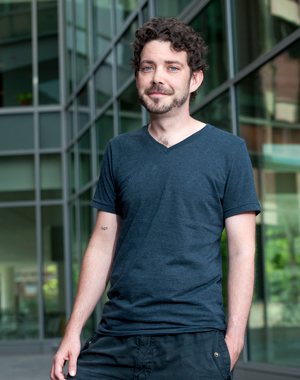

News Archives : 2012 : Ethan Garner Tracks the Hidden Dynamics of Life
by Cathryn Delude
August 31, 2012

Ethan Garner, a new assistant professor in the Molecular and Cellular Biology (MCB) department, watches how bacteria grow and divide at a single molecule level. Using a mix of sub-diffraction imaging, particle tracking, and genetics, he can see enzymes rotate around the cell circumference in an ordered pattern while they synthesize the cell wall, pulling along the cytoskeleton underneath. He can manipulate the rod-shaped Bacillus cells so that they become round, causing the enzymes to move in random directions, and then release the conditions and observe the structure and order of the rod reform. “The more I look, the more dynamic and interesting it gets,” he says of his quest to understand how these motions create the emergent shape of cells and how they help control cell growth and division.
Importantly, Garner can use his methods to directly watch how antibiotics stop these motions and the cell growth. “Antibiotic resistance is an increasing problem today. If we can understand mechanistically how bacterial growth works, we could design new ways to inhibit that process and develop new antibiotics to treat resistant infections more effectively.”
A Dynamic Start
Perhaps appropriately, Garner, who tracks molecular motions, is himself a person of constant motion. As a military kid among many siblings, he bounced around the country with his mother and stepfather. His parents had a studious work ethic, and had Garner working paper routes by fourth grade. At fourteen, he began living with his father and stepmother, both nuclear materials engineers, in Richland, Washington, a small town where the fuel for the first atomic bomb was produced. Garner consumed science along with food at the dinner table, but it was an older brother’s stories of cool microbiology research that spurred his interest in biology. That brother encouraged Garner to join a research lab right away when he entered Washington State University. He worked in three labs as an undergraduate, and produced two first author papers and fourteen papers total with one advisor, Keith Dunker, predicting the disordered regions within proteins that do not fold.
After receiving his BS in Biochemistry in 1999, Garner planned to investigate protein folding in graduate school at the University of California San Francisco. But then he encountered a young PI, Dyche Mullins, who was studying the actin filaments, which are self-assembling polymers that grow and shrink (polymerize and de-polymerize). Cells use the force of actin polymerization to push out their front edges and crawl along. “Self-assembling polymers are a neat system for studying how individual components can synergize to give emerging function and spatial organization,” Garner explains. He joined Mullins’s lab, eventually receiving a PhD in Biochemistry in 2008, to investigate the still poorly understood actin homologs in bacteria. He studied a new actin homolog, ParM, which segregates plasmids, and found that it exhibits dynamic instability similar to that of eukaryotic tubulins, as it switches between phases of growing and shrinking. Because there are only 3 components to this plasmid segregating system (DNA, binding proteins, and ParM), Garner could “kinetically dissect” it to completely understand how the machinery worked. Then, he could build it up again from scratch in a test tube and see the ParM filaments pushing the DNA apart to segregate the plasmids. Garner’s essay on his thesis work won 2008 GE Grand Prize in Science.
Test Tubes and Microscopes
“I realized that the most powerful research combines biochemistry in the test tube with the microscopic examination of cells,” Garner explains of his next move to Harvard in 2009. “If you see filaments that form slowly in the test tube but quickly in the cell, you know there’s another factor that’s making it happen. By going back and forth between in vitro and in vivo, you understand what you are missing.” Now he needed to learn the in vivo observation part of that equation.
Thus began his tri-part post-doctoral arrangements. Based within Tim Mitchison’s lab at Harvard Medical School (HMS), he stayed rooted in classic eukaryotic cell biology. Also at HMS he learned to work with bacteria with David Rudner, an expert on Bacillus genetics. He then carried his cells and pipettes in a cooler across the Charles River to Xiaowei Zhaung’s lab at Harvard University for single-molecule biology and bioimaging. Using super-resolution microscopy, he could extract more spatial organization and motions from the tiny bacterial cells.
The Joy of Wacky Projects
Meanwhile, Garner has been co-teaching a summertime Physiology course at the Marine Biological Laboratory in Woods Hole with Dyche. “The non-competitive nature of the discovery there always renews my joy of science. It reminds me of why I liked science as a kid, like when we poked under rocks with sticks. It’s the thrill of random experiments that lead to unexpected discoveries.” Garner wants to infuse that exploratory aspect into his MCB lab, giving each lab member a “wacky side-project.”
Thanks partly to his many contacts after multiple summers at Woods Hole and his post-doctoral labs, several prospective post-doctoral candidates are interviewing to work in his new lab. In preparation, he is optimizing the imaging for bacteria. He hopes to image non-standard bacteria and fungi that are just becoming genetically tractable.
“I really like the MCB department because it’s a hybrid of people working on such diverse problems – systems biology, structure, neuroscience, organismal biology, quantitative biology, and imaging. It’s rigorous, and friendly, and has lots of shared resources.” He hopes to add to those resources in time, especially on the imaging front.
Still Poking Around
Garner’s extracurricular interests may also add some spark to the greater Boston area. In graduate school, he worked with False Profit Labs (a group of engineers, artists, computer kids, and biologists) to develop interactive sculptures: exploding hydrogen bubbles or sprays of fire pulsing to a person’s heartbeat. The sculptures were exhibited at festivals (including Burning Man and Coachella), NASA, and other places. Here in Boston, he and several others developed “Toxic Bloom,” a 5-foot high metal phage that shoots a 3-foot high, 4-inch wide column of fire that changes colors as people interact with it. If you raise your arms, it will turn from red to green, for example. “It’s educational for kids because it teaches about chemistry,” he says, although Boston fire and safety personnel still need some persuading on that front.
To fight occasional boredom (believe it or not) and to test the common wisdom that rents were rising in San Francisco, Garner began plotting rent data from Craigslist. The resulting heat map got some press (see boingboing and SFGate). He is now collecting data for a rent map of the Boston area. Given the news that rents here are rising, it could be another hit.